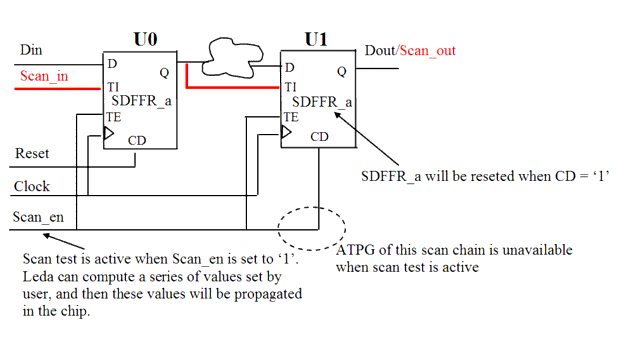

| Description | During combinatorial propagation and scan shifting, flip-flops must not be reset, because this either decreases test coverage or increases the number of required test vectors. |
| Policy | DESIGN |
| Ruleset | DFT |
| Language | VHDL/Verilog |
| Type | Hardware |
| Severity | Error |
This is an example of invalid Verilog code, followed by a circuit diagram that illustrates the problem:
module ntl_dft29_top(Clock, Reset, Scan_en, Scan_in, Din, Dout);
input Clock, Reset, Scan_en, Scan_in, Din;
output Dout;
wire net_01;
...
// Asynchronous Scan DFF with reset - SDFFR_a,
// CD is the reset pin, reset is active when it is '1'
SDFFR_a U0(.D(Din), .CP(Clock), .CD(Reset), //Reset
.TI(Scan_in), .TE(Scan_en), .Q(Dout_temp));
SDFFR_a U1(.D(net_01), .CP(Clock), .CD(Scan_en),
.TI(Dout_temp), .TE(Scan_en), .Q(Dout));
// NTL_DFT29 -- reset of U1 is active when scan test active
endmodule
